Next: Parameters
Up: Theory and implementation
Previous: Quaternions and rotations.
Contents
In quaternion algebra, the rotational minimization problem may now be
phrased as follows:
Since the matrix  representing a normalized quaternion is orthogonal this may also be written as
representing a normalized quaternion is orthogonal this may also be written as
This follows from the simple fact that
, if is normalized.
Eq. (4.61) shows that the target function to be minimized can be written as a simple quadratic
form in the quaternion parameters [55],
| 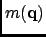 |
 |
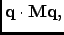 |
(4.62) |
| 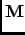 |
|
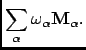 |
(4.63) |
The matrices
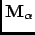 are positive semi-definite matrices depending on the positions
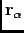 and
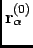:
The rotational fit is now reduced to the problem of finding the minimum of a quadratic form with the constraint that the
quaternion to be determined must be normalized. Using the method of Lagrange multipliers to account for the normalization
constraint we have
This leads immediately to the eigenvalue problem
| 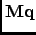 |
|
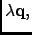 |
(4.66) |
| 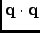 |
|
 |
(4.67) |
Now any normalized eigenvector  fulfills the relation
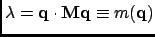.
Therefore the eigenvector belonging to the smallest eigenvalue, 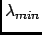, is the desired solution. At the same
time gives the average error per atom.
fulfills the relation
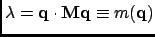.
Therefore the eigenvector belonging to the smallest eigenvalue, 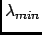, is the desired solution. At the same
time gives the average error per atom.
The result of RBT analysis is stored in a new trajectory file that contains only RBT motions.
Next: Parameters
Up: Theory and implementation
Previous: Quaternions and rotations.
Contents
pellegrini eric
2009-10-06